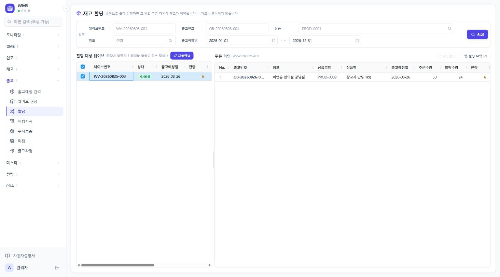
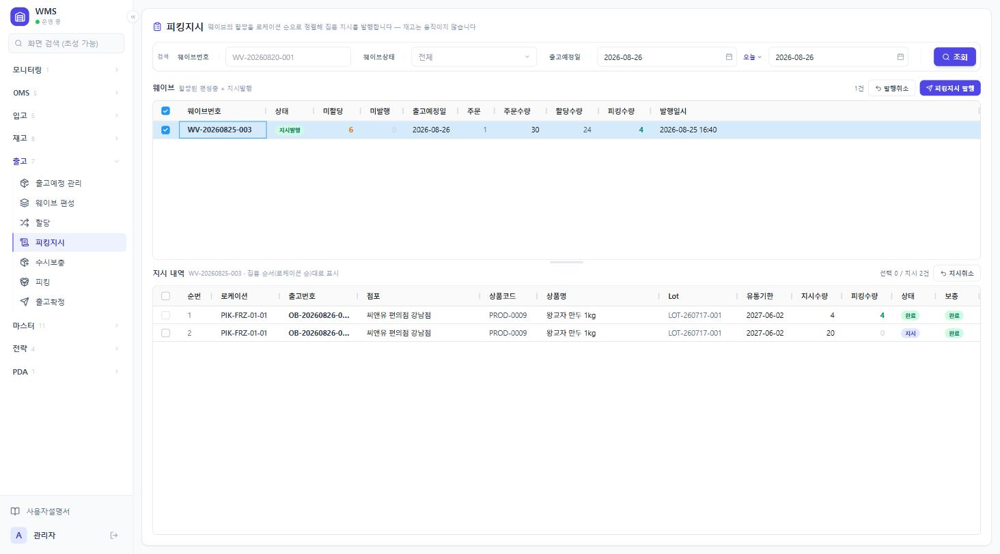
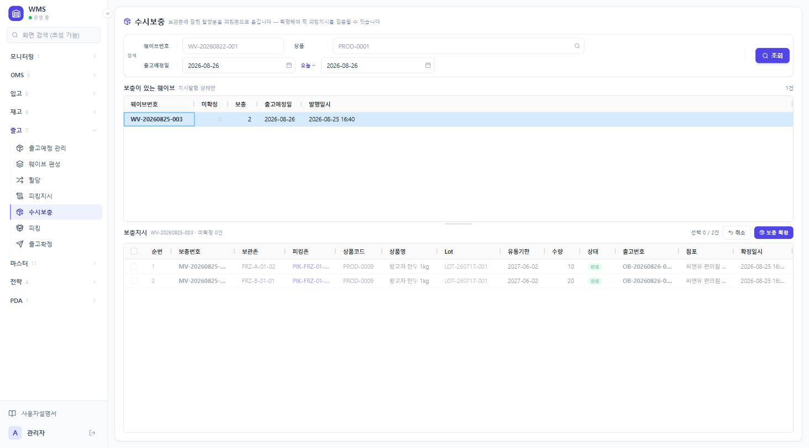

6편입전략이 담았는지 사람이 담았는지 표시합니다. 「수동」은 전략 조건과 맞지 않을 수 있습니다.
조작 순서 — 직접 묶기
[새 웨이브]를 눌러 빈 웨이브를 만듭니다.
왼쪽 목록에서 그 웨이브를 클릭합니다.
[주문 담기]를 누릅니다. 미편성 주문 목록이 팝업으로 열립니다.
담을 주문을 체크하고 담습니다.
잘못 담았으면 오른쪽에서 체크하고 [빼기]를 누릅니다. 주문은 지워지지 않고 미편성으로 돌아갑니다.
조작 순서 — 전략으로 묶기
화면 위 전략 카드에서 실행할 웨이브 전략과 대상 출고예정일을 고릅니다.
[미리보기]로 무엇이 묶일지 먼저 볼 수 있습니다.
[전략 실행]을 누릅니다. 결과는 실행 이력이 펼쳐지며 표시됩니다.
웨이브 삭제
왼쪽에서 웨이브를 고르고 [삭제]를 누릅니다. 웨이브 행만 지워지고 소속 주문은 전부 미편성으로 돌아갑니다.
자주 막히는 지점
[주문 담기]가 회색입니다
웨이브를 선택하지 않았거나, 이미 지시발행됐거나, 할당이 시작된 주문이 있습니다. 할당 화면에서 할당을 먼저 해제하세요.
담으려는 주문이 후보에 없습니다
이미 다른 웨이브에 속해 있거나, 출고예정일이 이 웨이브와 다릅니다.
일부 주문만 체크가 안 됩니다
할당이 시작된 주문입니다. 할당을 먼저 해제해야 뺄 수 있습니다.
5.3 할당 출고 › 할당
언제 쓰나
웨이브에 담긴 주문에 어느 재고를 쓸지 정할 때 씁니다. 재고는 움직이지 않고 예약만 걸립니다.
시작 전 준비
웨이브가 편성돼 있어야 합니다. 목록에는 잔량이 남았거나 해제할 할당이 있는 웨이브가 나옵니다.
화면 구성

12345
할당 — 웨이브를 체크하면 오른쪽에 그 웨이브의 주문 라인이 나옵니다.
1[자동할당]체크한 웨이브의 잔량을 채웁니다. 전량 할당된 웨이브는 대상이 아닙니다.
2웨이브 잔량주문수량 − 할당수량. 이만큼이 이번에 채울 몫입니다.
3주문 라인한 줄을 클릭하면 수동할당 대상이 됩니다.
4주문 · 할당 · 잔량 수량잔량이 남아 있으면 아직 못 채운 부분할당입니다.
5[수동할당] · [할당 내역]수동할당은 Lot·로케이션을 직접 고릅니다. 할당 내역에서는 붙은 할당을 보고 해제합니다.
조작 순서
왼쪽에서 할당할 웨이브를 체크합니다. 여러 개를 함께 체크할 수 있습니다.
[자동할당]을 누릅니다.
확인 창에서 대상 건수와 잔량을 보고 [할당]을 누릅니다.
화면 위에 할당 결과가 나옵니다. 요청·할당·잔량과 적용된 전략을 확인합니다.
자동할당은 유통기한이 임박한 것부터(FEFO) 채웁니다. 재고가 모자라면 앞 순번 주문이 채울 수 있는 만큼 가져가고 나머지는 잔량으로 남습니다. 조건에 맞는 할당 전략이 있으면 그 정의를 따릅니다. 결과에 적용된 전략 이름이 나오고, 전략이 없으면 「기본 동작」으로 표시됩니다.
재고가 모자랐을 때
결과 칸에 「재고가 모자란 라인 N건」이 나오고 어느 주문·상품이 얼마나 부족한지 표시됩니다. 부족분은 잔량으로 남습니다. 재고가 들어오면 같은 웨이브를 다시 할당하면 됩니다.
수동할당
오른쪽 「주문 라인」에서 라인 한 줄을 클릭합니다.
[수동할당]을 누릅니다. 후보 재고 목록이 팝업으로 열립니다.
쓸 재고를 골라 수량을 정하고 저장합니다.
할당 해제
[할당 내역]을 누르면 이 웨이브에 붙은 할당이 나옵니다. 체크해서 해제하면 예약이 풀립니다.
피킹지시가 이미 나간 할당은 바로 해제되지 않습니다. 피킹지시 화면에서 그 지시를 먼저 취소해야 해제가 열립니다.
자주 막히는 지점
「쓸 수 있는 재고가 없습니다」
재고가 아예 없거나, 있어도 보류·예약된 것뿐입니다.
「체크한 웨이브는 모두 전량 할당돼 있습니다」
더 할당할 잔량이 없습니다.
할당했는데 현장에 안 보입니다
지시발행된 웨이브에 나중에 붙인 할당입니다. 피킹지시 화면에서 [추가 발행]을 눌러야 나갑니다.
5.4 피킹지시 출고 › 피킹지시
언제 쓰나
웨이브의 할당을 집품 순서로 정렬해 현장에 내보낼 때 씁니다. 재고는 움직이지 않습니다.
시작 전 준비
할당이 붙어 있어야 합니다. 할당 하나가 지시 한 줄이 됩니다.
화면 구성

12345
피킹지시 — 지시가 발행된 웨이브를 고른 상태입니다. 발행 전에는 아래가 「지시 대상」으로 나옵니다.
1[피킹지시 발행] · [발행취소]발행은 체크한 편성중 웨이브가 대상입니다. 발행취소는 피킹 실적이 하나도 없을 때만 됩니다.
2미할당 · 미발행미할당은 재고를 못 붙인 몫, 미발행은 할당은 됐는데 지시가 안 나간 건수입니다.
3지시 목록순번이 집품 동선입니다. 발행할 때 로케이션 순으로 고정됩니다.
4상태 · 보충보충이 「지시」로 남아 있으면 물건이 아직 보관존에 있어 집을 수 없습니다. 뱃지를 누르면 수시보충 화면으로 갑니다.
5[지시취소]체크한 지시만 취소합니다. 한 개도 안 집은 지시가 대상입니다.
조작 순서
위 목록에서 발행할 웨이브를 체크합니다. 상태가 「편성중」인 것이 대상입니다.
아래 「지시 대상」에 나오는 순서가 곧 발행될 집품 순서입니다.
[피킹지시 발행]을 누릅니다.
확인 창에서 건수를 보고 [발행]을 누릅니다.
할당이 보관존에 잡혀 있으면 보충지시가 함께 나갑니다. 알림에 「보충지시 N건이 함께 나갔습니다」로 표시됩니다.
발행 후에 할 수 있는 일
동작
대상
결과
추가 발행
아직 지시가 안 나간 할당
집품 순번이 기존 뒤에 이어붙습니다
지시취소
한 개도 안 집은 지시
고른 지시만 취소. 다른 지시가 집혔어도 됩니다
발행취소
웨이브 전체
피킹 실적이 하나도 없을 때만 됩니다
지시를 취소해도 예약은 그대로 남습니다. 다음에 할 일은 둘 중 하나입니다.
같은 재고로 다시 내보내려면 → [추가 발행]
예약을 풀어 다른 주문에 쓰려면 → 할당 화면에서 할당해제
자주 막히는 지점
「할당이 없는 주문 N건 — 이 웨이브는 발행할 수 없습니다」
할당이 하나도 안 붙은 주문이 섞여 있습니다. 웨이브에서 빼거나 할당한 뒤 다시 시도하세요.
미할당 잔량이 있는데 발행됩니다
막지 않습니다. 그대로 두면 부족한 채 나갑니다. 채우려면 할당 후 [추가 발행]을 하세요.
「피킹 로케이션이 없어 빠진 할당이 있습니다」
보관존 할당인데 옮겨 둘 피킹존 자리가 없습니다. 상품의 고정 로케이션을 등록하거나 피킹존 자리를 비운 뒤 추가 발행하세요.
「피킹이 시작된 웨이브는 발행을 통째로 취소할 수 없습니다」
아래 목록에서 아직 한 개도 안 집은 지시만 골라 [지시취소]하세요.
5.5 수시보충 출고 › 수시보충
언제 쓰나
보관존에 잡힌 할당분을 피킹존으로 옮길 때 씁니다. 확정해야 짝 피킹지시를 집을 수 있습니다.
시작 전 준비
보충지시는 직접 만들지 않습니다. 피킹지시를 발행할 때 자동으로 만들어집니다.
화면 구성

1234
수시보충 — 두 건 모두 이미 확정된 상태(완료)라 흐리게 표시됩니다. 미확정 건은 또렷하게 나오고 체크할 수 있습니다.